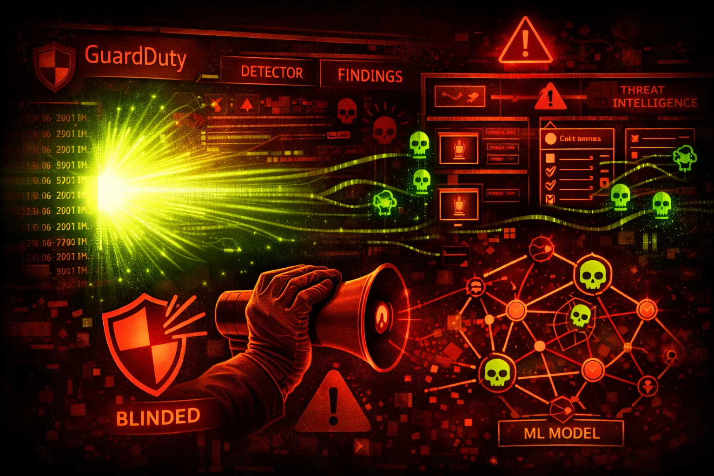

GuardDuty is AWS's managed threat detection service. It analyzes CloudTrail, VPC Flow Logs, and DNS logs to detect malicious activity. Red teamers must understand what triggers alerts.
Analyzes management events for suspicious API activity: unusual regions, first-time API calls, known malicious IPs, credential abuse patterns.
Detects network anomalies: port scanning, unusual outbound traffic, communication with known C2 servers, cryptocurrency mining patterns.
Monitors DNS queries for: C2 domain lookups, DNS exfiltration attempts, cryptomining pool connections, DGA domain patterns.
GuardDuty can be disabled, findings can be archived/suppressed, and detection has blind spots. Understanding finding types helps red teamers operate below detection thresholds.
aws guardduty list-detectorsaws guardduty get-detector --detector-id abc123aws guardduty list-findings \\
--detector-id abc123 \\
--finding-criteria '{"Criterion":{"severity":{"Gte":7}}}'aws guardduty list-ip-sets --detector-id abc123aws guardduty list-filters --detector-id abc123aws guardduty update-detector \\
--detector-id abc123 \\
--no-enableaws guardduty delete-detector --detector-id abc123aws guardduty archive-findings \\
--detector-id abc123 \\
--finding-ids $(aws guardduty list-findings --detector-id abc123 --query 'FindingIds' --output text)aws guardduty create-filter \\
--detector-id abc123 \\
--name "SuppressMyIP" \\
--action ARCHIVE \\
--finding-criteria '{"Criterion":{"service.action.networkConnectionAction.remoteIpDetails.ipAddressV4":{"Eq":["1.2.3.4"]}}}'aws guardduty create-ip-set \\
--detector-id abc123 \\
--name "TrustedIPs" \\
--format TXT \\
--location s3://bucket/trusted-ips.txt \\
--activateaws guardduty delete-threat-intel-set \\
--detector-id abc123 \\
--threat-intel-set-id threat123{
"Version": "2012-10-17",
"Statement": [{
"Effect": "Allow",
"Action": "guardduty:*",
"Resource": "*"
}]
}Full GuardDuty access allows disabling detection and suppressing findings
{
"Version": "2012-10-17",
"Statement": [{
"Effect": "Allow",
"Action": [
"guardduty:Get*",
"guardduty:List*",
"guardduty:Describe*"
],
"Resource": "*"
}]
}Read-only access for security analysts without modification rights
{
"Version": "2012-10-17",
"Statement": [{
"Sid": "PreventGuardDutyDisable",
"Effect": "Deny",
"Action": [
"guardduty:DeleteDetector",
"guardduty:UpdateDetector",
"guardduty:DeleteMembers",
"guardduty:DisassociateFromMasterAccount"
],
"Resource": "*"
}]
}Organization SCP to prevent disabling GuardDuty in member accounts
{
"Version": "2012-10-17",
"Statement": [{
"Effect": "Allow",
"Action": [
"guardduty:ArchiveFindings",
"guardduty:CreateFilter",
"guardduty:UpdateFilter"
],
"Resource": "*"
}]
}Ability to archive findings and create suppression rules hides attacks
Centralize GuardDuty management so member accounts can't disable it.
aws guardduty enable-organization-admin-account \\
--admin-account-id 123456789012Use Service Control Policies to deny GuardDuty modifications.
Publish findings to S3 or EventBridge for independent monitoring.
aws guardduty create-publishing-destination \\
--detector-id abc123 \\
--destination-type S3 \\
--destination-properties DestinationArn=arn:aws:s3:::findings-bucketCreate CloudWatch alarms for DeleteDetector, UpdateDetector, ArchiveFindings.
GuardDuty must be enabled per-region - ensure coverage everywhere.
for region in $(aws ec2 describe-regions --query 'Regions[].RegionName' --output text); do
aws guardduty create-detector --enable --region $region
doneAdd custom threat IP lists for your industry or known adversaries.